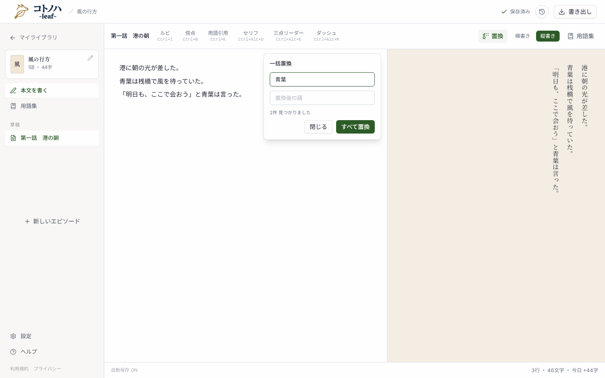
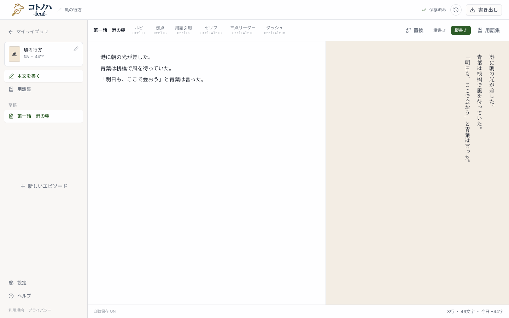
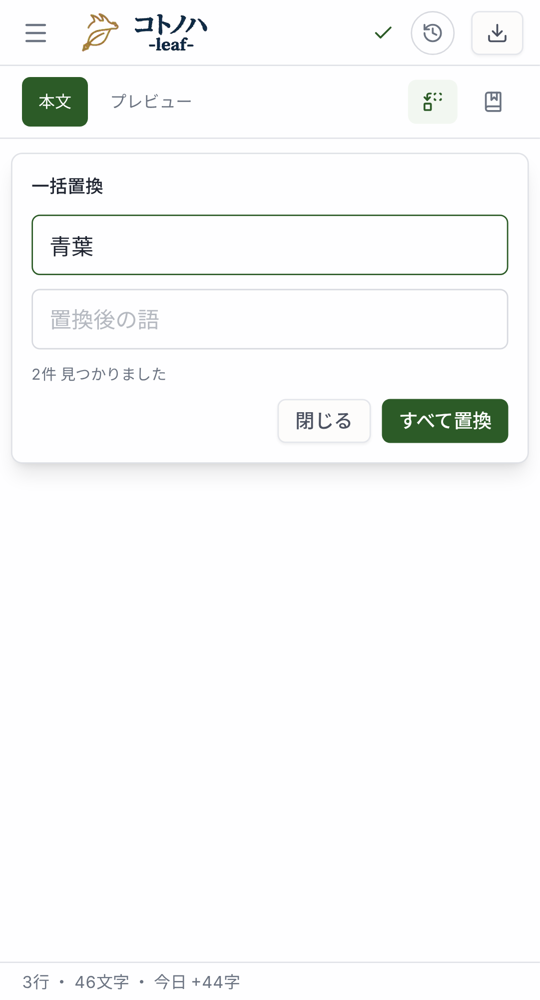
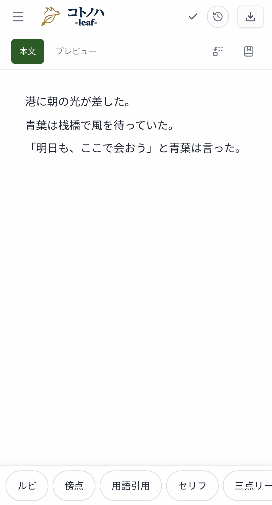

作品全体の検索・置換 COT-29
UIプロトタイプ — 本文・保存・同期はモックです。
執筆・検索パネル（desktop）
現状 — この話だけの一括置換

パネルを開く前

変更後 — ①入口 ②対象 ③結果 ④全件置換 ⑤該当行へ移動
執筆・検索パネル（mobile / 393px）
現状

パネルを開く前

検索語や置換語を変え、結果の「この1件を置換」や「すべて置換」を操作できます。③の話名・抜粋を押すと⑤の本文へ移動します。無料会員・オフラインも同じローカル機能です。履歴の復元は既存画面を使います。